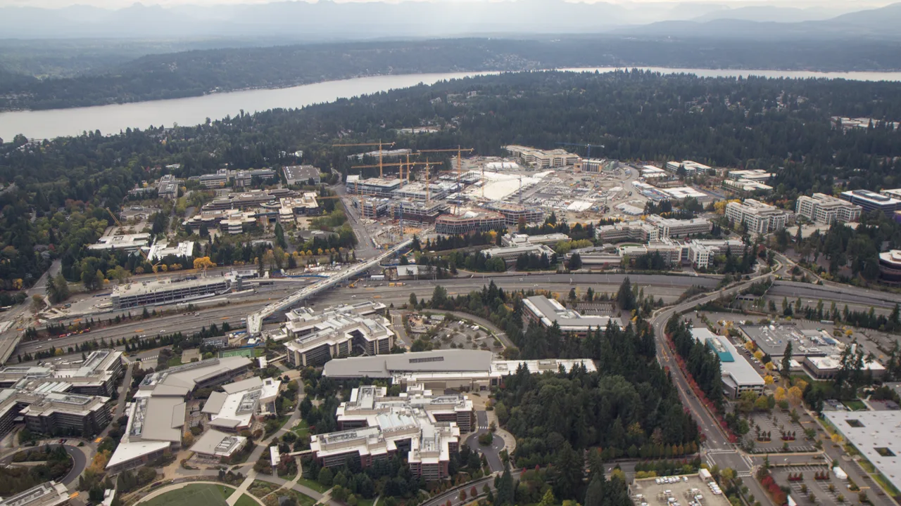

마이크로소프트 주주가 지금 가장 궁금해할 질문은 “코파일럿이 유명하냐”가 아닙니다. 이미 코파일럿이라는 이름은 충분히 알려졌고, Azure도 인공지능 수요의 대표 수혜처로 평가받고 있습니다. 더 중요한 질문은 이겁니다. 마이크로소프트가 데이터센터와 GPU, 전력, 네트워킹에 쏟는 돈이 언제 Azure 사용량과 Microsoft 365 추가 요금으로 돌아오느냐입니다.
Microsoft FY2026 3분기 실적 발표에 따르면 분기 매출은 829억 달러로 전년 대비 18% 증가했고, Microsoft Cloud 매출은 545억 달러로 29% 늘었습니다. Azure and other cloud services revenue는 40% 증가했습니다. 회사는 AI 사업의 연간 매출 run rate가 370억 달러를 넘었고 전년 대비 123% 성장했다고 설명했습니다. 숫자만 놓고 보면 매우 강합니다.
그런데 좋은 숫자와 좋은 투자 판단은 같은 말이 아닙니다. 같은 자료에서 commercial remaining performance obligation, 즉 앞으로 매출로 바뀔 수 있는 상업 계약 잔액은 6,270억 달러로 99% 증가했습니다. 반면 Microsoft Cloud 매출총이익률은 66%로 내려갔습니다. 회사는 AI 인프라 투자와 AI 제품 사용 증가가 원인이라고 밝혔습니다. 그래서 이번 글의 핵심은 성장률이 아니라 투자 회수 속도입니다.
AI 매출은 커졌지만 원가도 보입니다

AI 매출 run rate 370억 달러는 마이크로소프트가 단순히 AI 이야기를 파는 회사가 아니라 실제 청구서를 만들고 있다는 뜻입니다. Azure AI, GitHub Copilot, Microsoft 365 Copilot, 보안과 데이터 제품이 한 고객 안에서 서로 연결될 수 있기 때문입니다. 고객 입장에서는 모델 하나를 따로 사는 것보다 이미 쓰는 업무 화면과 보안 체계 안에서 AI 기능을 붙이는 편이 훨씬 편합니다.
하지만 AI 매출이 커질수록 비용도 같이 보입니다. 클라우드 회사는 고객이 쓸 수 있는 용량을 먼저 깔아야 합니다. 서버를 사고, 데이터센터를 짓고, 전력과 냉각을 확보하고, 네트워크를 붙입니다. 고객 사용량은 나중에 올라오지만 감가상각과 운영비는 먼저 들어옵니다. 그래서 마이크로소프트를 볼 때 “AI 매출이 커졌다”에서 멈추면 반쪽만 읽는 셈입니다.
FY2026 3분기 10-Q는 이 부담을 더 선명하게 보여줍니다. 2026년 3월 31일 기준 현금, 현금성자산, 단기투자는 783억 달러였습니다. 대차대조표는 강합니다. 동시에 9개월 누적 투자활동 현금유출은 847억 달러로 커졌고, 회사는 property and equipment additions 증가를 주요 원인으로 설명했습니다. AI 수요를 잡기 위해 더 많은 설비를 먼저 깔고 있다는 뜻입니다.
Azure 용량은 언제 매출로 돌아오나
관련 영상
마이크로소프트 AI와 클라우드 투자 포인트를 설명하는 한국어 롱폼 영상
Azure의 40% 성장은 강한 숫자입니다. 더 눈여겨볼 부분은 회사가 다음 분기 Azure 성장률도 constant currency 기준 39~40%로 제시했다는 점입니다. FY2026 3분기 실적 콜에서 마이크로소프트는 capacity delivery와 fleet efficiency를 계속 강조했습니다. 말은 조금 딱딱하지만, 투자자에게는 아주 현실적인 문장입니다. 수요가 있어도 용량을 제때 열지 못하면 매출을 놓치고, 용량을 너무 앞서 열면 마진이 눌립니다.
클라우드 사업은 빈 객실을 채우는 호텔 운영과 비슷한 면이 있습니다. 객실을 먼저 지어야 손님을 받을 수 있지만, 객실이 비어 있으면 고정비가 바로 부담이 됩니다. Azure 데이터센터도 마찬가지입니다. AI 서버와 전력 용량을 먼저 확보해야 고객의 학습과 추론 수요를 받을 수 있습니다. 다만 그 용량이 실제 사용량으로 빨리 차야 매출총이익률이 회복됩니다.
이 지점에서 Amazon AWS와 Google Cloud를 같이 봐야 합니다. Amazon Q1 2026 자료는 AWS operating income이 142억 달러였다고 밝혔고, Alphabet Q1 2026 자료는 Google Cloud 매출 200억 달러와 operating income 66억 달러를 제시했습니다. 세 회사 모두 AI 클라우드 수요를 잡으려 하지만, 최종 승자는 발표 문구가 아니라 용량 회전율과 마진으로 갈릴 가능성이 큽니다.
코파일럿은 좌석보다 사용 시간이 중요합니다
Microsoft 365 Copilot은 마이크로소프트가 가진 가장 큰 배포면입니다. 기업 직원들은 이미 Outlook, Excel, Teams, Word, SharePoint를 씁니다. 새 도구를 따로 깔지 않아도 업무 화면 안에서 AI 기능을 붙일 수 있다는 점은 강력합니다. 그래서 코파일럿은 단순한 앱보다 기존 구독료 위에 붙는 부가 매출에 가깝습니다.
하지만 여기에도 확인할 부분이 있습니다. 유료 좌석이 늘어도 실제 사용 시간이 약하면 고객은 갱신 때 가격을 다시 따집니다. AI가 문서를 요약하고 회의록을 정리하는 정도를 넘어, 영업 기록, 고객 응대, 개발, 보안 운영, 재무 승인 흐름에서 시간을 줄여야 합니다. 고객 내부에서 “이 비용은 줄일 수 없다”는 판단이 나와야 장기 매출이 됩니다.
마이크로소프트는 실적 콜에서 Copilot paid seat additions와 ARPU 성장을 언급했습니다. 투자자가 보고 싶은 것은 바로 이 흐름입니다. 첫 번째는 유료 좌석 순증입니다. 두 번째는 기존 고객이 더 비싼 플랜으로 올라가는지입니다. 세 번째는 AI 사용량이 Azure 소비를 동시에 끌어올리는지입니다. 코파일럿이 정말 강하다면 Microsoft 365와 Azure가 따로 움직이지 않고 같은 고객 안에서 함께 커져야 합니다.
주주는 어떤 순서로 숫자를 봐야 하나
마이크로소프트는 이미 좋은 회사입니다. 그래서 분석은 더 까다로워야 합니다. 좋은 회사라는 사실만으로 현재 가격이 항상 편하다는 뜻은 아니기 때문입니다. AI 프리미엄이 붙은 대형주는 작은 성장 둔화보다 마진의 방향에 더 민감하게 반응할 수 있습니다. 특히 투자 규모가 커지는 국면에서는 매출 성장률과 잉여현금흐름을 같이 봐야 합니다.
첫 번째 확인 순서는 Azure 성장률입니다. 40% 안팎의 성장률이 유지된다면 AI 인프라 투자는 어느 정도 설득력을 갖습니다. 두 번째는 Microsoft Cloud 매출총이익률입니다. 66%에서 더 내려가는지, 아니면 용량 사용률이 올라오며 안정되는지 봐야 합니다. 세 번째는 commercial RPO입니다. 6,270억 달러의 남은 계약가치가 얼마나 빠르게 매출과 현금으로 바뀌는지가 중요합니다.
네 번째는 자본지출입니다. 데이터센터와 AI 서버 투자가 늘어나는 것은 나쁜 일이 아닙니다. 다만 투자 증가 속도가 매출 증가 속도보다 계속 빠르면 시장은 회수 기간을 의심합니다. 다섯 번째는 Copilot의 실제 결제와 사용입니다. 좌석 수, ARPU, 갱신률, 고객 사례가 함께 좋아져야 “AI가 기존 제품의 가격을 올려 준다”는 논리가 강해집니다.
상승 시나리오는 분명합니다. Azure는 높은 성장률을 유지하고, Copilot은 Microsoft 365 고객의 추가 지불을 끌어내며, Microsoft Cloud 마진은 용량 사용률이 올라오면서 안정됩니다. 이 경우 마이크로소프트는 AI 인프라와 업무 소프트웨어를 동시에 가진 보기 드문 복합 플랫폼으로 계속 평가받을 수 있습니다.
반대로 하락 시나리오도 어렵지 않습니다. AI 설비투자는 계속 커지는데 Copilot 사용률이 기대보다 느리고, Azure 성장률이 내려오며, 클라우드 마진까지 압박받는 흐름입니다. 이런 경우 시장은 “AI 매출 run rate”보다 “얼마를 써서 얼마를 벌었는가”를 더 크게 묻습니다. 마이크로소프트가 흔들린다는 뜻이 아니라, 좋은 회사에도 가격과 회수 기간의 문제가 있다는 뜻입니다.
그래서 지금 마이크로소프트를 볼 때는 코파일럿의 유명세보다 Azure 용량 회전율, Microsoft Cloud gross margin, commercial RPO, 자본지출, 잉여현금흐름을 같은 순서로 확인하는 편이 좋습니다. 이 다섯 숫자가 같은 방향으로 움직이면 AI 투자의 질은 점점 분명해집니다. 숫자가 엇갈리면 아무리 강한 플랫폼이라도 주가는 쉬어 갈 수 있습니다.
이 글은 특정 종목의 매수나 매도 추천이 아닙니다. 투자 판단 전에는 마이크로소프트의 최신 공시, 실적 발표, 클라우드 마진, 자본지출 계획, 자신의 투자 기간을 함께 확인해 주세요.